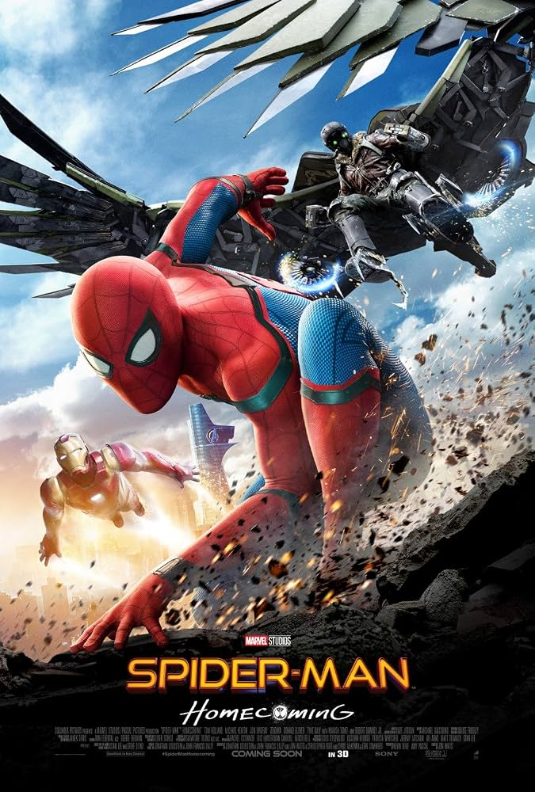
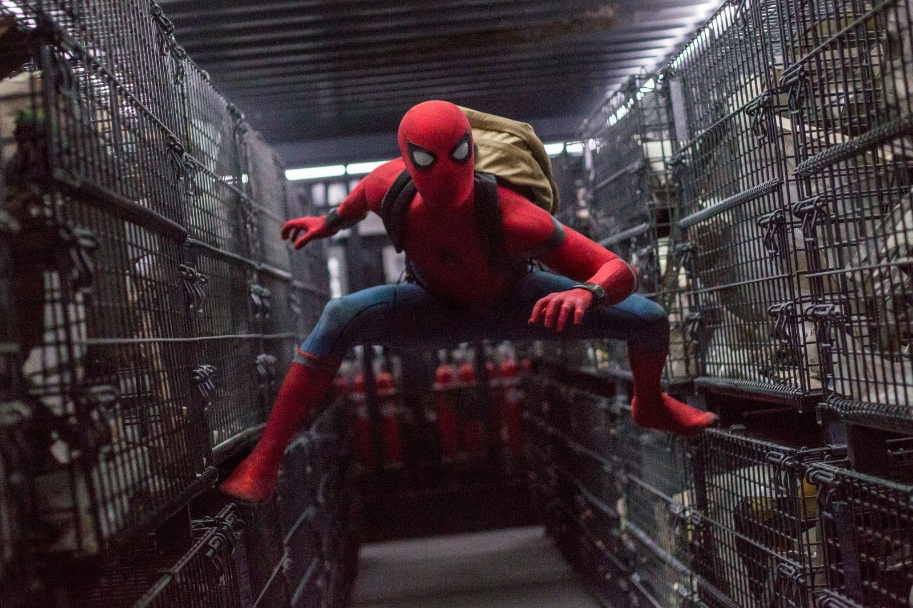
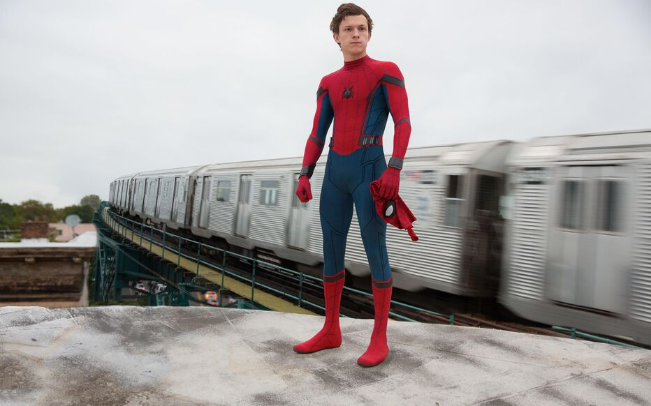

Spider-Man : Homecoming (2017)

| Titre original | Spider-Man : Homecoming |
|---|---|
| Année | 2017 |
| Genre | Action, Aventure, Science-fiction |
| Durée | 133 minutes |
| Réalisateur | Jon Watts |
| Acteur principal | Tom Holland |
| Scénaristes | Chris McKenna, Erik Sommers |
L'histoire
Dans Spider-Man : Homecoming, Peter Parker, un lycéen de quinze ans, vient de vivre sa première grande mission aux côtés des Avengers. Tony Stark lui a offert un costume high-tech, mais lui demande de rester un super-héros de quartier en attendant d'être prêt.
Impatient de prouver sa valeur, Peter tombe sur un trafic d'armes fabriquées à partir de technologies extraterrestres. Il se lance alors à la poursuite du Vautour, tout en essayant de mener sa vie d'adolescent au lycée.
Au fil de l'histoire, il comprend qu'un héros ne se définit pas par son costume, mais par ses choix et son sens des responsabilités.
Les moments importants
- Le retour à la vie normale : après sa mission avec les Avengers, Peter retourne au lycée et espère que Tony Stark lui confiera une nouvelle mission.
- La découverte du trafic : Peter tombe sur des criminels équipés d'armes ultra-puissantes et découvre qu'ils sont dirigés par Adrian Toomes, le futur Vautour.
- Son secret découvert par Ned : son meilleur ami Ned le surprend en costume et devient son complice.
- Le drame du ferry : Peter tente d'arrêter les trafiquants, mais le ferry est coupé en deux et Tony Stark doit intervenir. Furieux, il lui reprend son costume.
- Le sauvetage du Washington Monument : lors du concours de son lycée à Washington, Peter sauve ses camarades prisonniers d'un ascenseur.
- La révélation du bal : en venant chercher Liz pour le bal de promo, Peter découvre que son père n'est autre que le Vautour.
- L'effondrement : piégé sous les décombres, Peter retrouve sa confiance en lui, se dégage seul et repart au combat avec son costume fait maison.
- Le combat final : Peter affronte le Vautour sur son avion, le sauve de l'explosion et le livre à la police. Tony lui propose de rejoindre les Avengers, mais Peter refuse pour rester un héros de quartier.
Les personnages
Peter Parker
C'est le personnage principal du film. Lycéen de quinze ans, il rêve de devenir un vrai membre des Avengers et veut prouver sa valeur, quitte à se mettre en danger.
Tony Stark
C'est le mentor de Peter. Il lui offre un costume high-tech, mais lui demande de rester prudent et de s'occuper des petits crimes de son quartier en attendant d'être prêt.
Le Vautour
C'est le méchant du film. Adrian Toomes est un ancien ouvrier qui fabrique des armes à partir de technologies extraterrestres et affronte Peter à bord de son costume ailé.
Images du film

